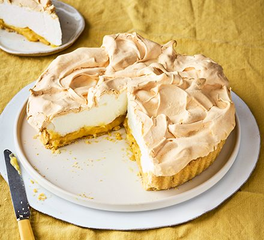

Home
Lemon Meringue Pie

Description
Sweet and tangy Lemon Meringue Pie. A dessert classic bound to impress at your next dinner party.
Ingredients
- 175g plain flour
- 100g cold butter
- 1 tbps icing sugar
- 2 tbsp corn flour
- 100g caster sugar
- 2 large lemons, zested
- 125ml lemon juice
- 85g butter
- 3 egg yolks and 1 whole egg
- 4 egg whites
- 200g caster sugar
- 2 tbsp cornflour
Steps
- For the pastry, put the plain flour, butter, icing sugar, egg yolk and 1bsp cold water in a large mixing bowl. Combine with a wooden spoon until it starts to bind. Tip the pastry onto a large floured surface, then roll out and line a loose bottom flan tin. Trim and neaten the edges pressing the pastry into the tin. Prick the base with a fork. and line with foil.
- Heat oven to 200C/180C fan/gas 6. Bake the pastry case blind with beans in foil for 15 mins, then remove the foil and bake for a further 10 mins until the pastry is pale and golden.
- While the pastry bakes prepare the filling. Mix the cornflour, golden caster sugar and lemon zest in a medium saucepan. Strain and stir in the lemon juice gradually. Cook over a medicum heat, stirring constantly, until thickened and smooth.
- Once the mixture bubbles, remove from heat and beat in the butter until melted. Beat the egg yolks (save white for meringue) and the whole egg together, stir into the pan and return to a medium heat. Keep stirring vigorously for a few minutes, until the mixture thickens and plops from the spoon.
- Put the egg whites into a large bowl. Whisk to soft peaks, then add the 100g of golden caster sugar a spoonful at a time, whisking between each addition. Whisk in the cornflour, then add the remaining 100g of sugar as before until smooth and thick.
- Reheat the filling and pour into the pastry case. Immediately put meringue around the egdes so it touches the edge of the pastry. Pile the rest into the centre, spreading it so it touches the surface of the hot filling, then give it all a swirl.
- Return to the oven for 18-20 mins until the meringuie is crispy and lightly coloured. Let the pie cool before serving.